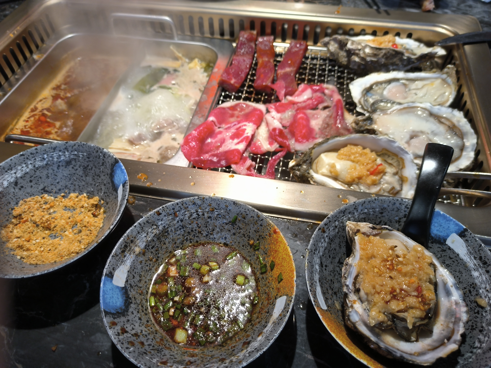
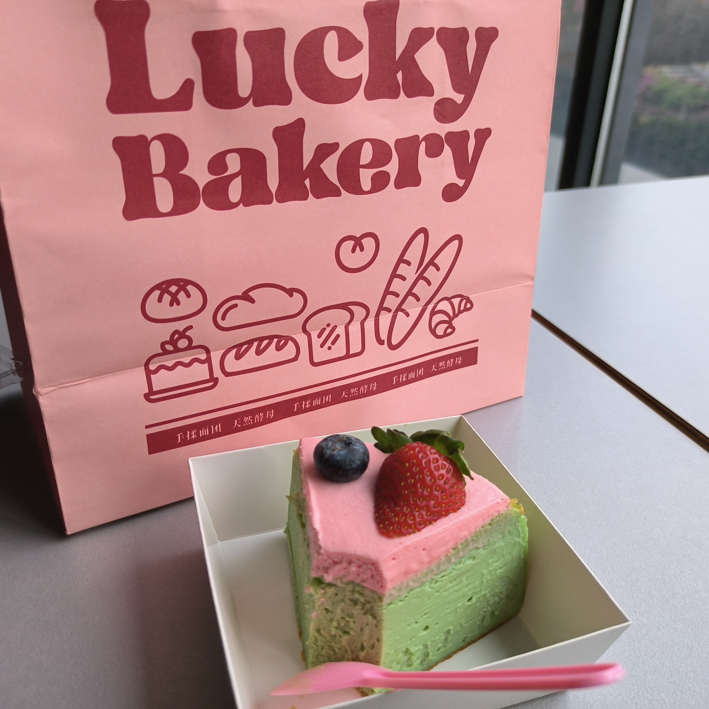
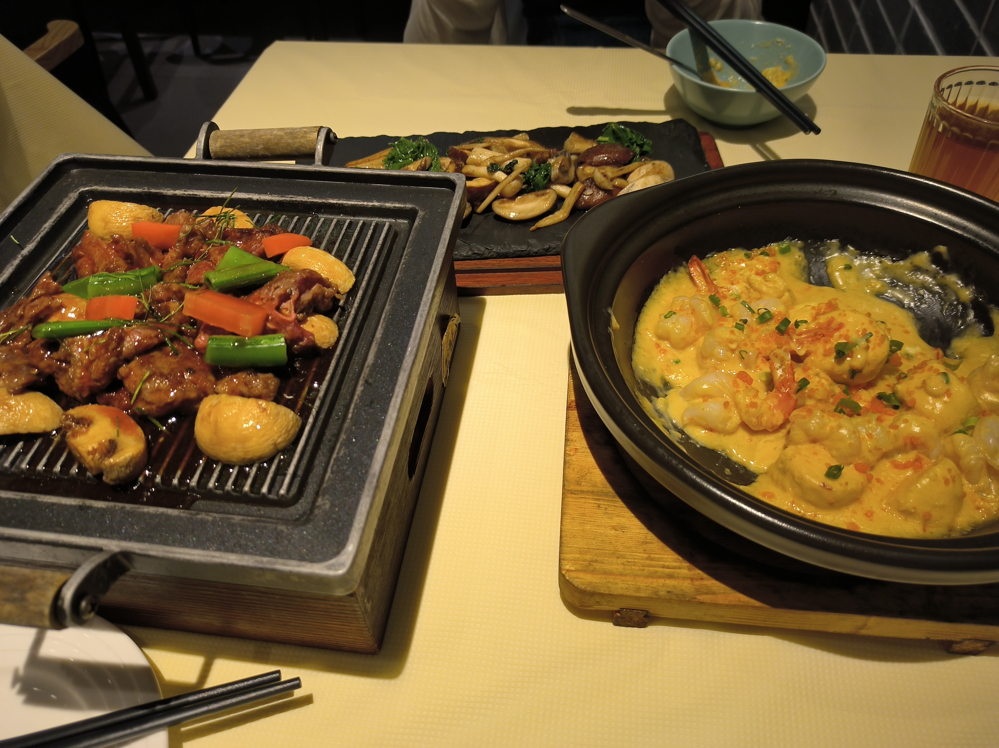

" Ce qui est tenu en mémoire finit par produire un écho. "

南村万博的生蚝自助
这里的生蚝非常大，但反而烤出来没那么好吃了。但这里有烤肉，并且他的安格斯雪花肥牛卷简直无敌！

第一次一个人吃的开心果巴斯克蛋糕
看着非常可爱的小蛋糕，但吃起来好噎啊！只吃一点点是最好吃的，吃到后来有点像在吃莲蓉月饼。

在农夫厨房的一次探险
似乎对他期望值太高了，许多看起来不错的菜品实际吃起来并没有那么美味。唯一剩下的评价就是健康了（ps：尝过后感觉不会去第二次了）